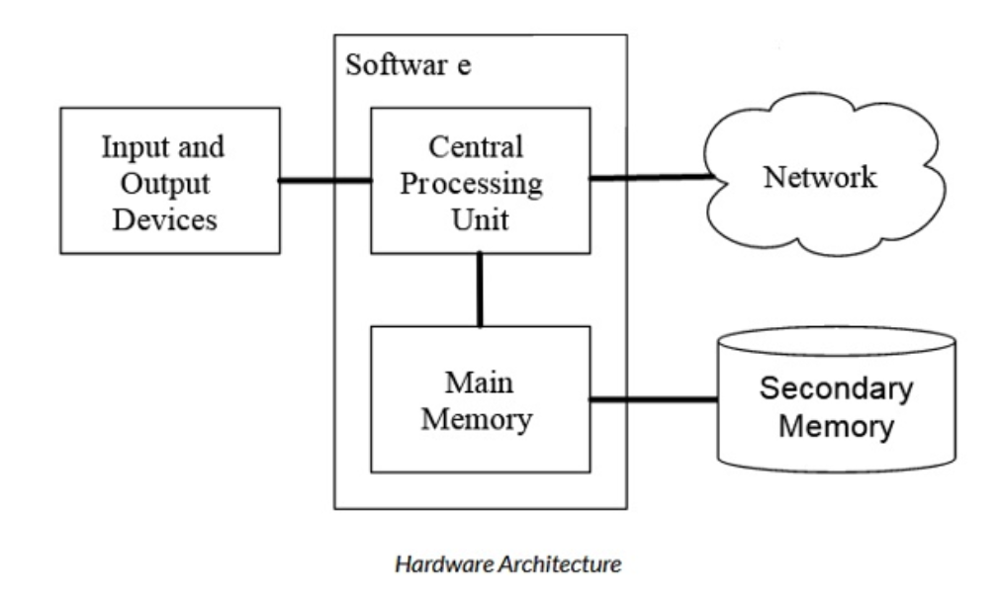
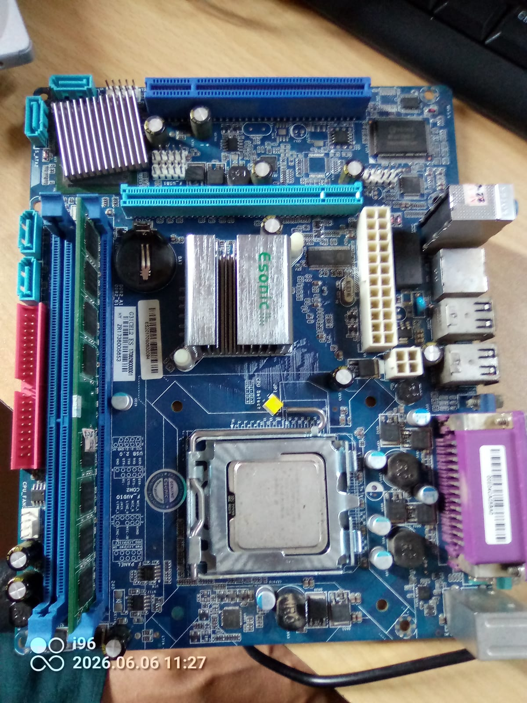

A computer is an electronic device that processes data, converting it into information that is meaningful for people.
Every computer system is made up of two fundamental parts:

Every computer — desktop, laptop, or smartphone — is built from the same fundamental building blocks. Hardware components fall into four categories: Processor, Memory, Input/Output Devices, and Storage.
A CPU is a microchip etched with millions of tiny circuits on silicon. It contains three essential sub-components:
| CPU Feature | What It Means |
|---|---|
| Clock Speed (GHz) | Every CPU has a clock driven by a quartz crystal, which can vibrate millions of times per second. The computer uses the vibrations to time its processing operations. In theory, the CPU can execute a function on every tick of the system clock (a clock cycle). However, in practice, the CPU is sometimes idle due to a delay between the request to retrieve data from memory and its delivery. A delay caused by waiting for another component to deliver data is called latency. The clock speed is measured in GHz. GHz is the number of operations a CPU can perform per second (in billions). 1.94 GHz = 1.94 billion operations per second. |
| Multiple Cores | Modern CPUs have multiple cores, so they can complete multiple tasks simultaneously. A core consists of a separate set of essential processor components (control unit, ALU, and registers). Most Intel Core i7 (11th generation) processors typically have eight cores, for example. All the CPU’s cores are located on the same chip. |
| Hyper-Threading (SMT) | CPUs now also support hyper-threading which im plements the concept Simultaneous Multithreading (SMT) Where a single core will present itself as multiple logical cores to a computer’s operating system |
| CPU Cache (L1/L2/L3) | To help minimize latency, CPUs have caches. A cache is a small amount of very fast memory located near (or within) the CPU. Data that the CPU has recently used or is predicted to need soon is placed in the cache for temporary storage. That way, if the CPU requests the data, it’s more readily available and incurs less delay. Since the late 1980s, most PC CPUs have had cache memory built into them. This CPU-resident cache is often called the level-1 cache, or L1 cache. To add even more speed an additional cache is added to CPUs known as Level-2 cache, or L2 cache. This cache used to be found on the motherboard but modern CPUs place L2 cache on the CPU to greatly increase CPU response. L2 cache is slower than L1 cache, but bigger in size. An additional motherboard-resident cache is called Level-3 cache or L3 cache. L3 cache is the largest cache memory unit, and also the slowest one. L1, L2, and L3 all speed up the CPU, although in different ways. L1 cache holds instructions that the CPU core is currently using or will need immediately. L2 acts as a secondary, larger buffer to store data that couldn’t fit in the L1 cache but is still likely to be needed soon. L3 serves as a “last resort” cache before hitting main memory (RAM). It is designed to hold larger datasets and shared data, minimizing the need to access the slow RAM. In all cases, the cache memory is faster for the CPU to access, resulting in quicker program execution. |
ROM stores the BIOS (Basic Input/Output System) — the permanent firmware that runs the instant you press the power button, before any operating system loads. It checks that all hardware is present and working (this is called POST — Power-On Self-Test) and then hands control over to the OS. Unlike RAM, the data here is not erased when power is lost.
Storage retains data permanently even without power. It is much slower than RAM but offers far greater capacity at lower cost.
| Type | Description | Speed |
|---|---|---|
| HDD (Hard Disk Drive) | Mechanical spinning disk. Stores data magnetically on rotating platters. | Slower |
| SSD (Solid State Drive) | No moving parts. Stores data in flash memory chips. Far faster than HDD. | Much Faster |
| USB Flash / Memory Card | Portable flash memory for transferring files between devices. | Moderate |
The motherboard is the main circuit board that connects all hardware components together. Every component discussed above either sits on the motherboard or connects to it. The board below is an Esonic micro-ATX motherboard — a real example used in everyday desktop computers.

Beyond the major components listed above, a motherboard is populated with dozens of smaller specialised chips and passive components, each performing a specific job. You would find components such as: capacitors (store and smooth electrical charge, the cylindrical gold/black components), resistors (limit current flow, tiny rectangular components), MOSFETs / transistors (act as electronic switches in power circuits), operational amplifiers / op-amps (amplify and compare analog signals — e.g. the LM358D we found), crystal oscillators (generate precise clock frequencies), inductors / chokes (filter electrical noise in power lines), network / Ethernet controllers (manage wired internet), USB controllers (manage USB port communication), and clock generator chips (synchronise all components to a common timing signal). The four chips we identified on this actual board during class are highlighted below.
| Component | Role | Key Property |
|---|---|---|
| CPU | Executes all instructions; brain of the system | Speed (GHz), Cores, Cache |
| RAM | Fast temporary workspace for the CPU | Volatile; lost on power-off |
| ROM | Permanent boot instructions | Non-volatile; read-only |
| HDD / SSD | Permanent file and program storage | Non-volatile; much slower than RAM |
| Input Devices | Send data from user → computer | Keyboard, mouse, mic, camera |
| Output Devices | Deliver results from computer → user | Monitor, printer, speakers |
| Network | Connect to other systems and the internet | Slow, remote, not always available |
| Motherboard | Backbone connecting all components | Determines compatibility of all parts |